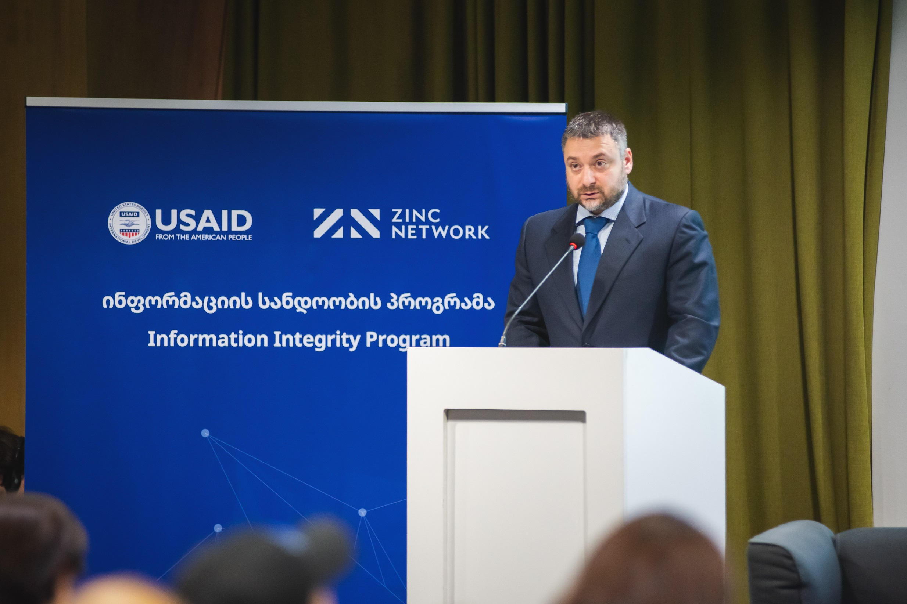

IDFI–მ კვლევის „რუსული კაპიტალი და რუსული კავშირები ქართულ ბიზნესში“ პრეზენტაცია გამართა
6 ივნისს ინფორმაციის თავისუფლების განვითარების ინსტიტუტმა (IDFI) “კოალიციამ ინფორმაციის სანდოობისთვის” ორგანიზებული კონფერენციის ფარგლებში, კვლევის - „რუსული კაპიტალი და რუსული კავშირები ქართულ ბიზნესში“ პრეზენტაცია გამართა და კვლევის ძირითადი მიგნებები წარადგინა
IDFI-მ განახორციელა სამშენებლო სექტორის, მსხვილი ინვესტიციების, ტურიზმის/სასტუმრო მომსახურებისა და საგზაო-სატრანსპორტო გადაზიდვების კვლევა. რუსეთის მიერ უკრაინასთან ომის დაწყებისა, (2022 წლის მარტი) და ე.წ. “ნაწილობრივი მობილიზაციის” შემდეგ (2022 წლის ოქტომბერი), საქართველოში ასობით ათასი რუსეთის მოქალაქე შემოვიდა, რომელთა ნაწილი ქვეყანაში დარჩა. ამან დიდი გავლენა იქონია კვლევის მესამე ეტაპზე მიმოხილულ სექტორებზე. კვლევაში ასევე მოცემულია განახლებული ინფორმაცია 2023 წლის აპრილის მონაცემებით